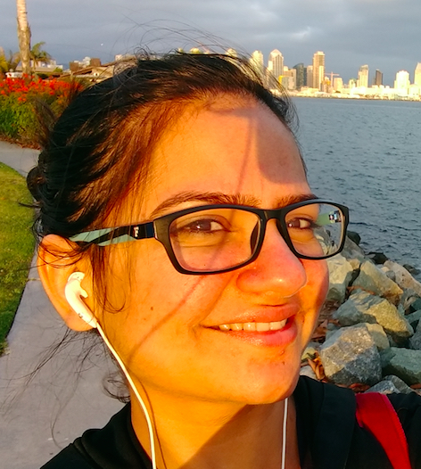

Sharmistha Jat
Research Scientist - ML
Spotify, London
I am a Machine Learning Research Scientist at Spotify, London. My research interests include Neuroscience, Audio, Natural language Processing (NLP) and Machine Learning (ML). I was affiliated to Machine And Language Learning Lab (MALL) at IISc and Prof. Tom Mitchell's research group at CMU. Apart from research, I enjoy listening to music and playing table-tennis in my spare time.
Google Scholar Profile
Education
Work Experience
- FinTrU, London, July 2023 - current, Senior Machine Learning Scientist
- Spotify, London, Oct 2021 - March 2023, Research Scientist
- Xerox Research Centre India, Bangalore, Oct 2013 - July 2015, Research Engineer
- Indian Institute of Technology Madras, Chennai, July 2011 - July 2013, Teaching Assistant
- Morgan Stanley, Mumbai, Jan 2010 - July 2011, Senior Associate
Internship Experience
- Carnegie Mellon University, Pittsburgh, Sept 2017 - April 2018/ Sept 2018 - March 2019, Advisor: Prof. Tom Mitchell
News
- I presented my thesis colloquium on the 21 June 2021!! [slides]
- Excited to be part of ICLR 2021 Workshop program committee, How Can Findings About The Brain Improve AI Systems? [link]
- Received ACL 2019 outstanding paper award [link]
- Received OHBM 2019 travel stipend award [link]
- Received travel grant from AAAI to attend AAAI 2019 conference.
- Selected to attend EMEA workshop for Brain Inspired Computing 6-10 Oct 2018, London [link]
- Our work has been accepted at 6th Workshop on Automated Knowledge Base Construction (AKBC), NIPS 2017
- Visiting Carnegie Mellon University as a research intern to work with Prof. Tom Mitchell [link].
- Attended Google NLP summit organised in Zurich.
- Our work 'CANDiS: Coupled & Attention-Driven Neural Distant Supervision' has been accepted at the WiNLP workshop at ACL 2017 [link],[paper].
- Attended Mysore Park Workshop on Vision, Language and AI [link].
- Received a Best Poster Presentation Award at Grace Hopper Celebration (GHC), India 2016 GHCI , news item.
- Organising a hands on workshop on Predictive Analytics in GHC India link and python notebook content, other resources, video link.
- CMU & NAACL 2016 conference visit blog
Publications
2021
- Sharmistha Jat, Partha Talukdar, Tom Mitchell, Word Salience during Sentence Reading, Accepted at Human Brain Mapping (oHBM), Seoul, Korea, 2021 [poster]
2020
- Sharmistha Jat, Erika J C Laing, Partha Talukdar, Tom Mitchell, Spatio-temporal Characteristics of Noun and Verb Processing during Sentence Comprehension in the Brain, in review [preprint]
2019
- Sharmistha Jat, Hao Tang, Partha Talukdar, Tom Mitchell, Relating Simple Sentence Representations in Deep Neural Networks and Brain, Accepted at Association for Computational Linguistics (ACL), Florence, 2019 [paper] [code] [poster] [news article] [slides]
- S. Kumar, Sharmistha Jat, Karan Saxena, Partha Talukdar, Zero-shot Word Sense Disambiguation using Sense Definition Embeddings, Accepted at Association for Computational Linguistics (ACL), Florence, 2019>[paper] [code] [ACL 2019 outstanding paper award]
- Sharmistha Jat, Tara Pirnia, Tom Mitchell, Dynamic Time Warping for Brain MEG Analysis, Accepted at Human Brain Mapping (oHBM), Rome, 2019 [poster]
2018
- Nicole Rafidi*, Dan Schwartz*, Mariya Toneva*, Sharmistha Jat, Tom Mitchell, MEG Representational Similarity Analysis Implicates Hierarchical Integration in Sentence Processing, Accepted at Human Brain Mapping (oHBM), Singapore, 2018 [paper] [poster]
2017
- Sharmistha Jat*, Siddhesh Khandelwal*, Partha Talukdar, Relation Extraction using Word and Entity Based Attention, Accepted at AKBC workshop at NIPS 2017, Long Beach, USA, 2017 [paper] [poster] [code]
- Tushar Nagarajan, Sharmistha Jat, Partha Talukdar, CANDiS: Coupled & Attention-Driven Neural Distant Supervision, Accepted at WiNLP workshop at ACL 2017, Vancouver, Canada, 2017 [paper]
2016
- Lavanya Sita Tekumalla, Sharmistha Jat, IISCNLP at SemEval-2016 Task 2: Interpretable STS with ILP based Multiple Chunk Aligner, Accepted at NAACL 2016 workshop on Semantic Textual Similarity (SemEval), San Diego, 2016 [paper] [code]
- Himanshu Sharad Bhatt, Sandipan Dandapat, Peddamuthu Balaji, Shourya Roy, Sharmistha Jat and Deepali Semwal, SODA:Service Oriented Domain Adaptation Architecture for Microblog Categorization , Accepted at NAACL 2016, San Diego, 2016 [paper]
2015
- Anuj Mahajan, Sharmistha, Shourya Roy, Feature Selection for Short Text Classification using Wavelet Packet Transform , Proceedings of the 19th Conference on Computational Natural Language Learning, CoNLL 2015, Beijing, China, July 30-31, 2015,ISBN - [978-1-941643-77-8], ,321-326 [paper]
2012
- Sharmistha, Madhur Amilkanthwar, Shankar Balachandran, Augmentation of Programs with CUDA Streams , 10th IEEE International Symposium on Parallel and Distributed Processing with Applications, ISPA 2012, Leganes, Madrid, Spain, July 10-13, 2012, ISBN - [978-1-4673-1631-6], 855-856 [paper]
Patents
- Narayanan U. Edakunni, Sharmistha Jat, Diagnostic tool to measure sensitivity of service quality of a transit network on weather conditions, 2014, United States Patent number 10062282
- Sharmistha Jat, Koyel Mukherjee, Narayanan U. Edakunni, Pallavi Manohar, Demand Responsive Cab Re-routing, 2014, United States Patent number 9978111
- Koyel Mukherjee, Ankit Kumar, Pallavi Manohar, Narayanan U. Edakunni, Sharmistha Jat, Static and Dynamic Routing and Scheduling of Shared Transport, 2014, United States Patent number 9746332
- Sharmistha Jat, Anuj Mahajan, Shourya Roy, Method and System for Predicting Requirements of a User for Resources Over a Computer Network, 2014, United States Patent number 10417578
Contact
sharmistha, dot, jat, at, gmail, dot, com
* : Equal Contribution
Google Scholar Profile
Github-profile
Hosted on GitHub Pages — Theme by orderedlist